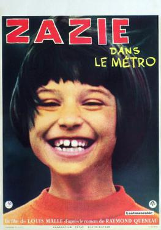

Louis Malle
1960
89 minutes
This is a fun and goofy slapstick-heavy film by Louis Malle, who somehow also did Elevator to the Gallows. It's basically about a very precocious and mischievous girl who gets taken to Paris and wants to ride the Metro, but is at least initially thwarted by a strike. Her mother leaves her in the care of her uncle to babysit her, and hijinks ensue, which is an understatement. Huge chunks of this film are like a live action Bugs Bunny cartoon. Zazie runs off on her own to go see the city, slipping out of her uncle's house. She gets pursued by a man who may or may not be a pedophile or a cop or both, but either way puts off serious creep vibes. She ends up back at the house of her uncle, who appears to be a drag queen of some sort getting ready for his act. More lunacy ensues when everyone goes off continuing to chase everyone else around Paris, and crazier and crazier elements keep getting added into the mix including Zazie, her uncle, the pedophile guy, random neighbors, a bunch of German female tourists, and an army of actual cops. The whole thing spirals into a chaotic Mel Brooks style meta-brawl at the end, at which point the madness even starts destroying the film set itself and the entire cast and crew get involved. It's a bit like watching Hitchcock direct a Marx Brothers film and then gleefully giving into the chaos that ensues.
The entire Warner Brothers lunacy reminds you of all the rabbit signage you saw on the Metro during your trip to Paris. One of the first things you noticed when riding the Metro is that most of the warning signs feature bad things happening to anthropomorphic rabbits. There are rabbits getting their hands shut in the door, rabbits falling in front of trains, rabbits getting shocked on the third rail, et cetera. You initially hadn't planned on taking many photos on your trip, but this detail was bugging you. And at the same time you started to notice a lot of duck imagery as well. Your hotel was located in the red light district, and the shop windows were chock full of rabbits and ducks, somehow. Every sex shop seemed to have numerous sex toys on display that took the form of rubber duckies. One shop even had a gigantic horse-sized porcelain rubber duck outside the door, with numerous signs posted around it telling people not to mount the duck. There was a lot of fetish-wear in the window in the form of leather or latex rabbit masks, vibrators with "rabbit ear" attachments, and general rabbit and duck themed bondage toys and gear of all sorts. Since it was just after Easter, lots of seasonal ads featured this imagery. And certainly at the art museums a lot of famous paintings featured rabbit or duck elements as well. You ended up stopping to snap pictures any time you found a rabbit or duck in the wild in the streets of Paris, ending up with a few hundred photos on your phone.
Once you got home, you ended up turning this into a two-in-one art book experiment, which also served as photo album for your travels--The Rabbits of Paris/The Ducks of Paris. For the cover image you used the notorious "optical illusion" image of an animal that can change back and forth between looking like a rabbit or a duck, depending on whether you see the protruding part as a slightly open beak or a pair of ears. You laid out the book right-side-up first with all the duck pictures in the front and the rabbits pictures in the back, with that cover image and the title The Ducks of Paris. Then you flipped it upside down and put the same cover image on the other side with the title The Rabbits of Paris and all the rabbit images on that end upside-down relative to the duck ones, only to meet in the middle with images of a skinned rabbit and a skinned duck in the window of a butcher shop on the street.
You also did a French language version of the same book, Les Lapins de Paris/Les Canards de Paris, which is the same thing with a French title and with the order swapped (at least relative to where the UPC ends up). Both versions currently sit on your bookshelf as a memento of your trip.
Time to choose something different: